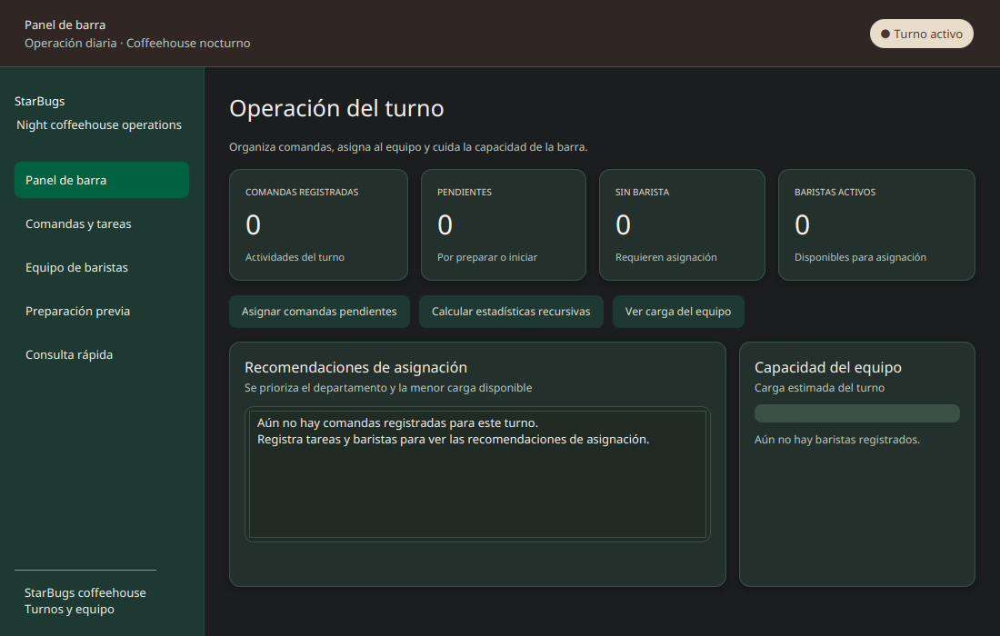
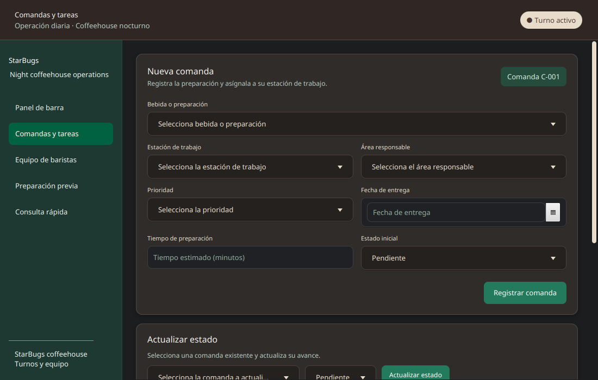
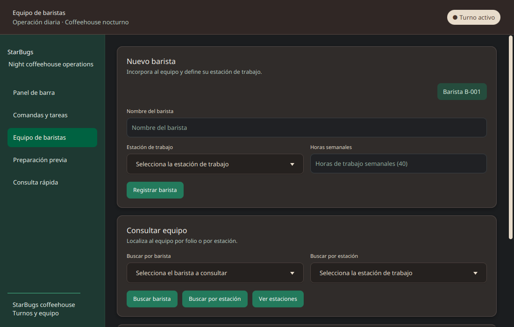
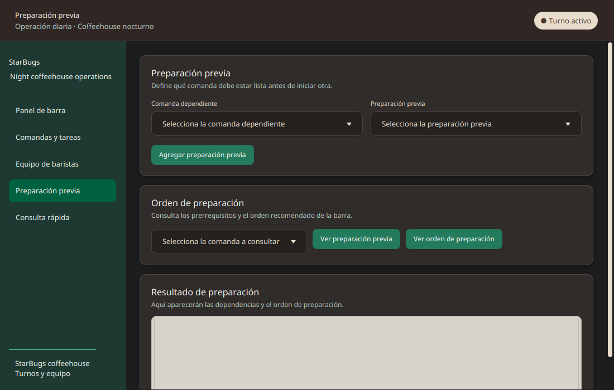
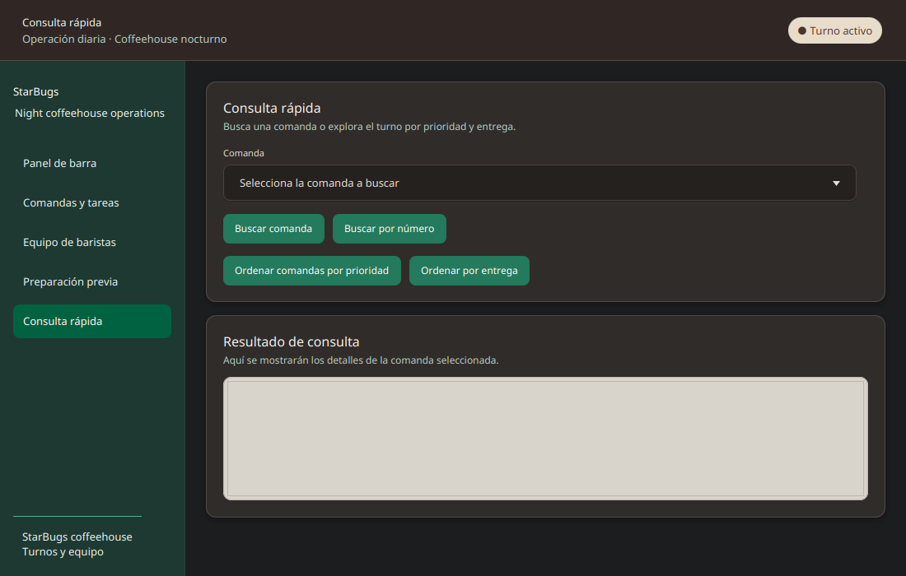

| Nombre: Martínez Ceja Jesús Emiliano | Matrícula: AL07108460 |
| Curso: Bases de Datos | Profesor: Alberto Trejo |
| Actividad: Actividad 5 | Fecha: 26/09/2026 |
StarBugs es una aplicación para administrar comandas de una cafetería. Permite registrar tareas, asignarlas a baristas, ordenar las más urgentes y consultar su estado.
Aplicar estructuras de datos y algoritmos de búsqueda y ordenamiento para organizar el trabajo diario de una cafetería.
Repositorio: https://github.com/EmilianoMtzC/StarBugs
La primera versión fue una aplicación de cafetería con tres apartados. Sirvió para practicar las estructuras de datos con operaciones sencillas antes de desarrollar el gestor de comandas.
Con ese avance se comprobaron las operaciones básicas de agregar, retirar y consultar datos. En la versión final el proyecto pasó a organizar comandas, asignarlas a baristas y controlar el orden de preparación.
Se usaron merge sort para ordenar, búsqueda binaria para localizar tareas en una lista ordenada, recursividad para estadísticas y orden topológico para las dependencias.
La aplicación tiene cinco vistas: panel de barra, comandas y tareas, equipo de baristas, preparación previa y consulta rápida. Las pruebas del sistema terminaron correctamente con 23 comprobaciones aprobadas.
Los datos se guardan en memoria mientras la aplicación está abierta. Al cerrarla, se reinician.




